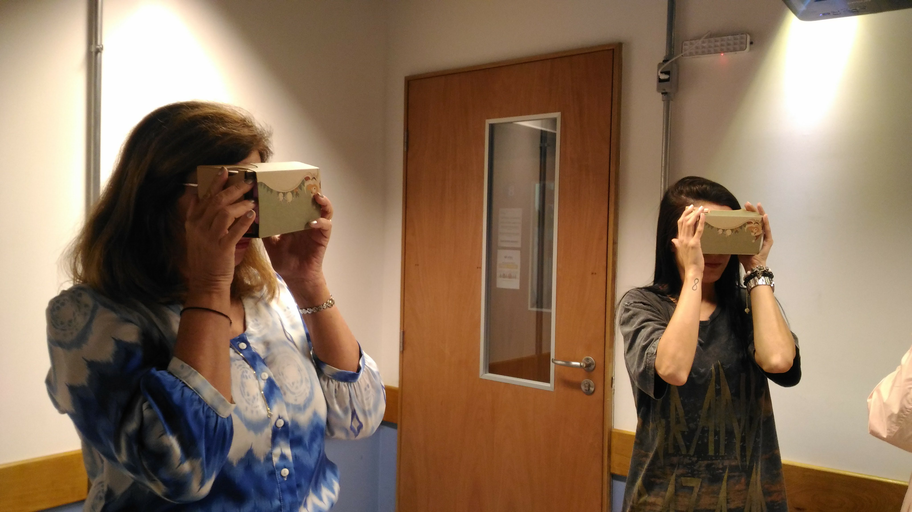
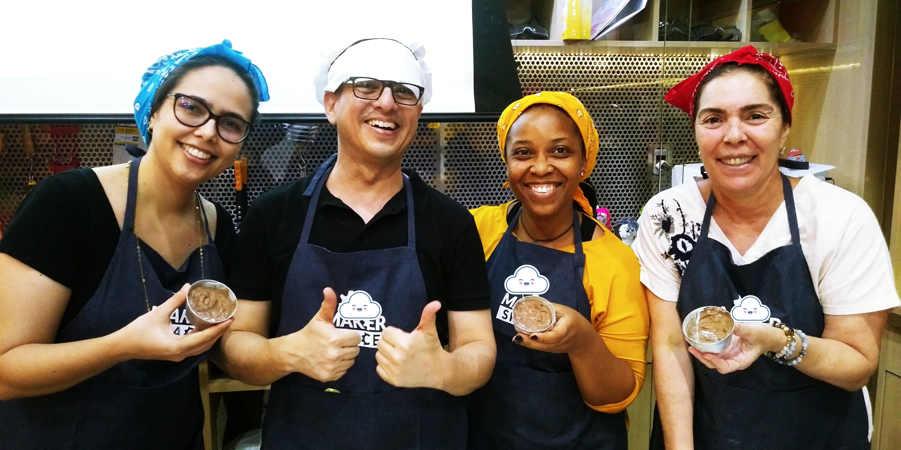
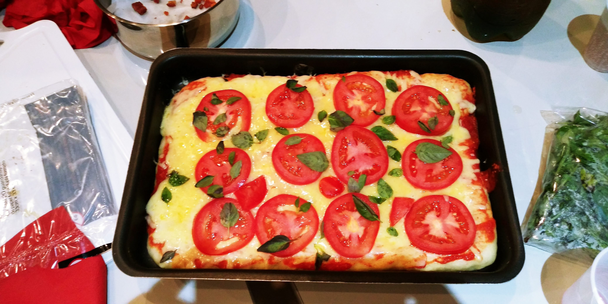
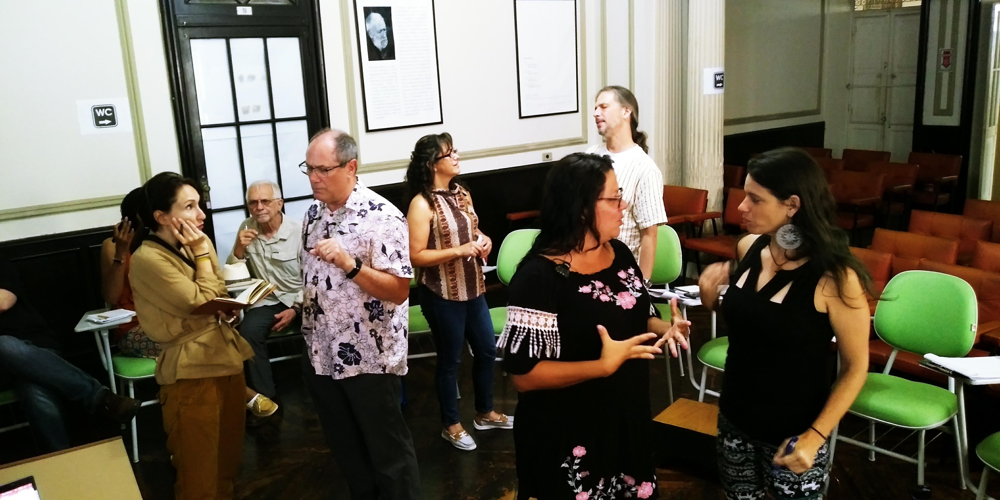
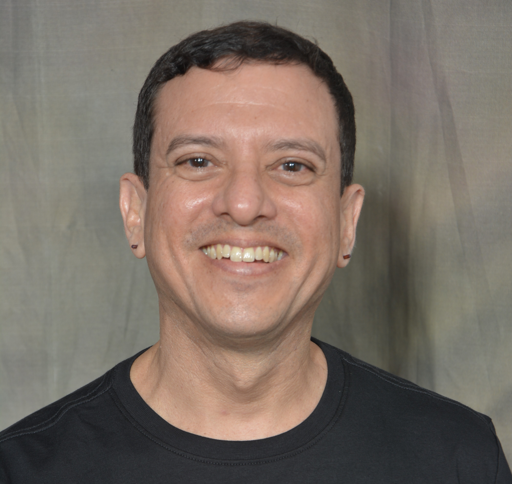

Contato
Telefone: (71) 98276 0840
E-mail: romulocraveiro@gmail.com
Principais competências
- Gestão de sala de aula
- Abordagem intercultural
- Inglês instrumental
- Português como Língua Adicional
- Ensino de pronúncia
- Tecnologias no ensino: ferramentas online
- Estratégias de aprendizagem
- Adaptação e criação de material didático
Línguas
- Inglês avançado
- Italiano intermediário
- Espanhol pré-intermediário
- Francês básico
- Alemão básico
- Russo iniciante
Atividades pedagógicas
Clique nas imagens para saber mais:

Partes da Casa em Realidade Virtual

Petit Gateau + sorvete + "going to" para falar de planos

Aula de culinária: pizza e a ciência por trâs usando os condicionais

Português para falantes de outras línguas: engajamento, bate-papos e imersão cultural
TITULAÇÕES E CERTIFICADOS
- Mestre em Letras (UFBA - Universidade Federal da Bahia). Dissertação: Uso de transcrição fonética na aprendizagem do português brasileiro como língua adicional, Março de 2009 – Novembro de 2011. 🔗
- Especialista em Língua Inglesa (UNIFACS – Universidade Salvador, Salvador-Bahia, Brazil), Abril de 2008 – Dezembro de 2009. 🔗
- Licenciado em Letras Português e Inglês (UNIFACS - Universidade Salvador, Salvador-Bahia, Brazil), 2007. 🔗
- SIT TESOL Certificate Course – World Learning SIT Graduate Institute (Coligação das Entidades de Educação e Cultura Brasil Estados Unidos, Campinas-São Paulo, Brazil), 2012.🔗
- Desenvolvedor Fullstack - Cubos Academy, Salvador-Ba (Novembro de 2021 a junho de 2022) Link para o "Projeto multidisciplinar de final de curso." Culminância do curso, foi uma oportunidade de criar do zero uma aplicação web com um time.🔗
- Back-end: lógica de programação, Node.js e PostgreSQL;
- Front-end: HTML, CSS, JavaScript, React JS;
- Soft skills: gestão do tempo, negociação, metodologias ágeis Trello e Jira Atlassain, comunicação não-violenta, inglês avançado;
- Desenvolvimento de aplicações web, integração front end e back end, deploy de aplicações, versionamento de código.
- Cozinheiro Internacional - Senac-Ba, maio a outubro de 2007 (Carga horária de 800 horas).
- Elaboração de menus, cardápios e fichas técnicas;
- Higiene e manipulação de alimentos;
- Prática profissional de cozinheiro na empresa pedagógica;
- Técnicas de trabalho do cozinheiro;
- Introdução ao turismo e à hospitalidade
- Noções de segurança no trabalho
- Ética e meio-ambiente

RECEPCIONISTA BILINGUE E AUXILIAR DE RESERVAS

Romulo Craveiro
Professor de inglês
Objetivo profissional
Atuar na área de ensino de língua inglesa fazendo a diferença no desenvolvimento humano de profissionais e estudantes.
Resumo
Ensinando línguas há quase três décadas, procuro desenvolver constantemente a criatividade, o olhar humanizado, o planejamento, a antecipação de problemas e a constante reflexão sobre o que pode melhorar nas minhas entregas.
Experiência
PROFESSOR DE INGLÊS PARA CRIANÇAS, ADOLESCENTES E ADULTOS
ACBEU - Associação Cultural Brasil-Estados Unidos- Produzi material didático e avaliações;
- Orientei alunos do curso de formação de professores (TTC – Teacher Training Course);
- Realizei entrevistas de nivelamento para novos alunos;
- Fui examinador dos testes internacionais CaMLA/YLTE (agora MYLE/MLA) Bronze and Silver Exams de 2016 a 2018;
- Ganhei uma bolsa de estudos de 4 semanas intensivas de curso para professores SIT Course em Campinas, SP, 2012; Fui um dos 6 selecionados de centros binacionais de todo o Brasil.
- Compartilhei aprendizados no workshop “Sharing SIT experience”. Salvador, dezembro de 2012;
- Conduzi treinamentos para colegas professores utilizarem ferramentas online na transição para a modalidade à distância durante a pandemia em 2020;
- Ensinei português para estudantes universitários estadunidenses de 2009 a 2011.
PROFESSOR DE PORTUGUÊS PARA FALANTES DE OUTRAS LÍNGUAS
Fullbright Group Project Aboroad in Brazil, Salvador, Bahia, julho de 2019:- Ensei português para professores do Hillsborough Community College e da Universidade do Sul da Florida:
- Criei pré-teste e pós-teste no Google Forms para facilitar a avaliação, geração de relatório e feedback aos alunos;
- Realizei aula de culinária como uma forma de imersão cultural enquanto os alunos praticavam seu português;
- Ofereci ferramenta online de comunicação aos estudantes para facilitar interação entre eles e comigo.
PROFESSOR DE PORTUGUÊS E CULTURA BRASILEIRA PARA FALANTES DE OUTRAS LÍNGUAS
Diálogo Language School (dezembro de 2000 a março de 2009):- Produzi material didático da escola;
- Atuei como intérprete de conferência e particular;
PROFESSOR DE LÍNGUA INGLESA E TUTOR DE CULTURA BRASILEIRA
Curso de Letras à Distância no NUPPEAD – Universidade Salvador – UNIFACS:- Elaborei aulas para serem aplicadas por tutores presencialmente;
- Gravei videoaulas;
- Atuei como tutor na disciplina Cultura Brasileira
Outras experiências profissionais
TRADUTOR
ASTRO.COM | DESDE 2017 | SALVADOR-BA- Tradutor voluntário, tendo traduzido artigos de Dana Gerhardt sobre as casas astrológicas;
ASTRÓLOGO
AUTÔNOMO | DESDE 2017 | SALVADOR-BA- Autoconhecimento
- Previsões
PERCUSSIONISTA
MARACATU SANTO ANTÔNIO | FEVEREIRO DE 2014 - NOVEMBRO DE 2017 | SALVADOR-BA- Instrumentos: alfaia, gonguê, caixa de guerra
- Apresentações em feiras e no carnaval
RECEPCIONISTA BILINGUE E AUXILIAR DE RESERVAS
Hotel Transamérica Salvador (1997 a 2000):
- Realizei auditoria noturna;
- Atendi hóspedes e clientes do departamento de reservas em italiano, inglês e espanhol.
- Realizei auditoria noturna;
- Atendi hóspedes e clientes do departamento de reservas em italiano, inglês e espanhol.